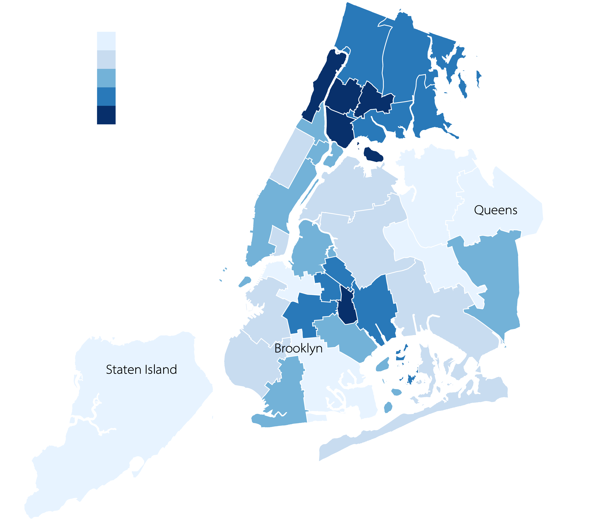
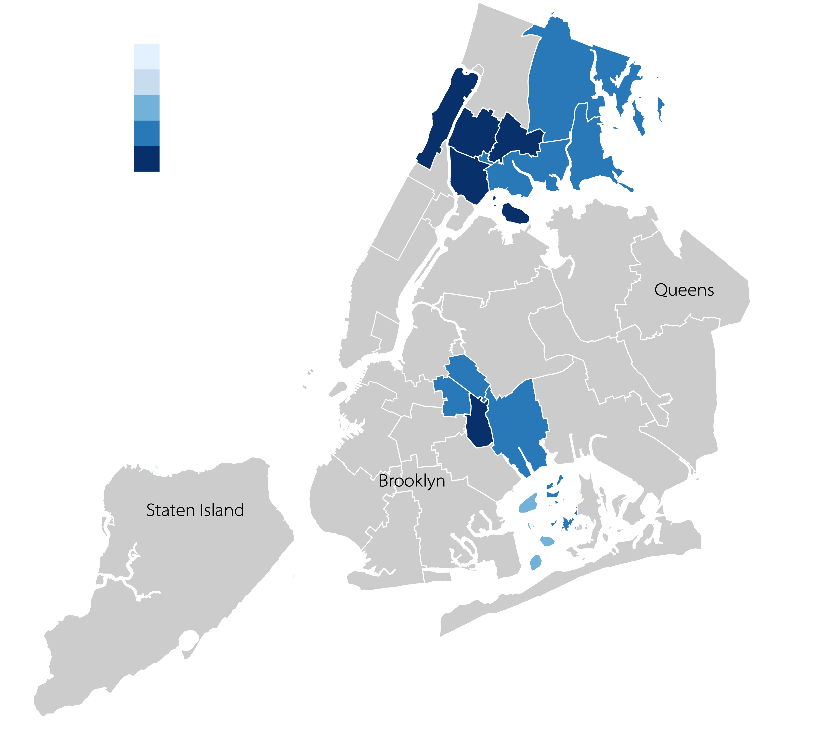
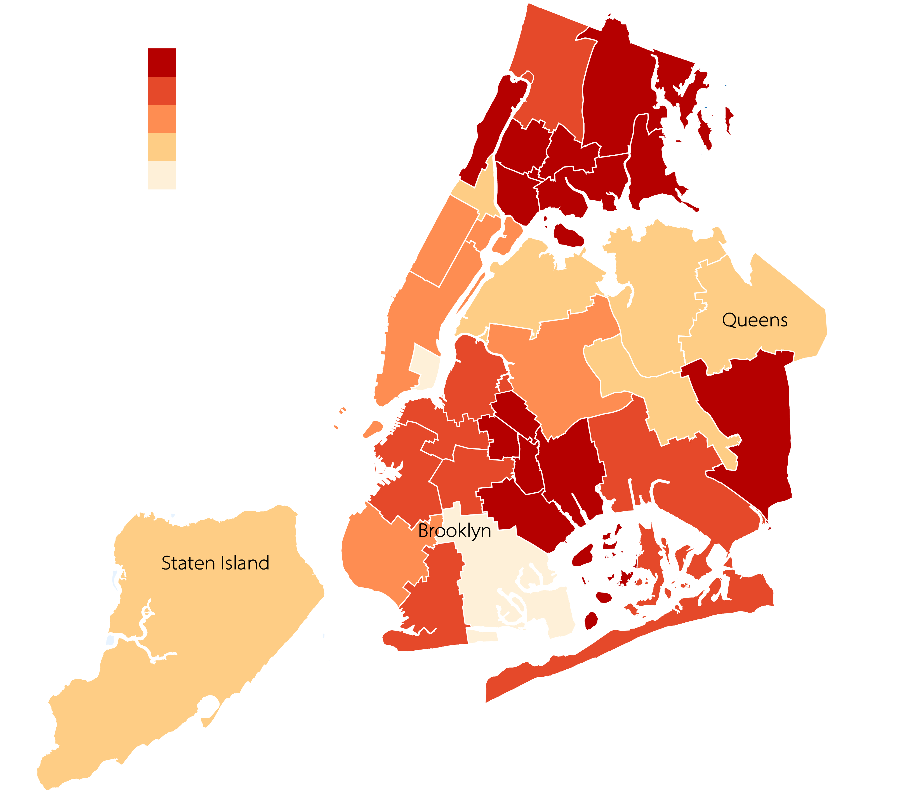
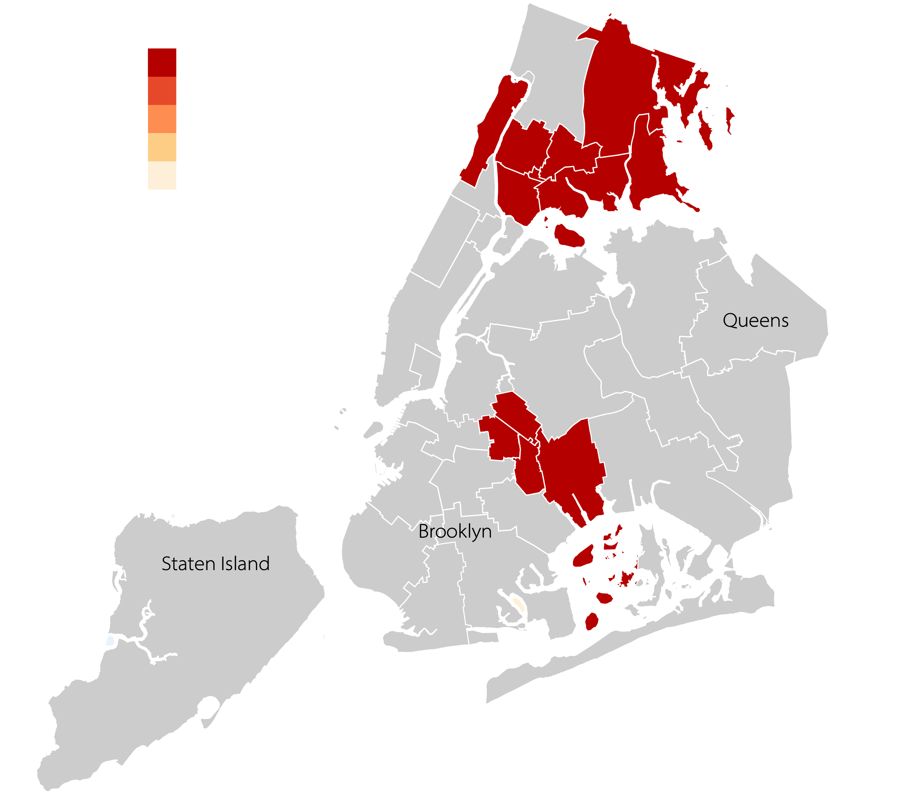
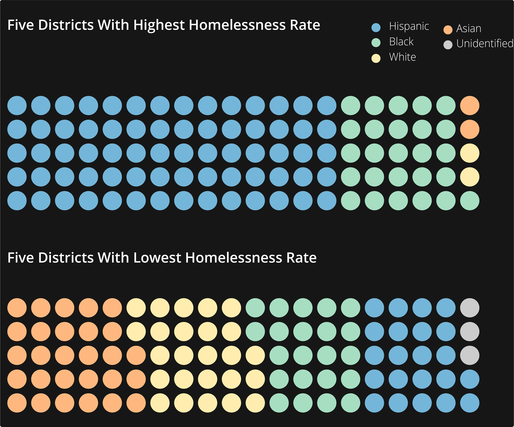

Hispanic and Black homeless students continue to fall behind their peers in New York City.
By Elena Mejia
December 18, 2019
Located in the Bronx, Crotona International High School had 333 students enrolled in the 2018-2019 school year. More than 130 of them were homeless, and spent their nights at motels, in shelters or on the streets. Many are left without a time or place to study, and might face unpredictable commutes. Academic achievement may be among the least of their day to day concerns.
“These kids are living in shelters, sharing a house, living unsheltered in cars, parks, abandoned buildings,” says Emily Kramer, of the nonprofit NYC-TEACHS, which focuses on the challenges of homeless students. “The trauma they endure makes it harder for them to focus on school.”
It may then come as no surprise that Crotona International High School got the worst SAT scores during the latest school year, according to New York City's Department of Education data.
There are more than 26,000 high school students identified as homeless in New York City, more than double the number reported 10 years ago, according to data from the New York State Department of Education.
Not meeting a college proficiency index or achieving a high school diploma increases the chance that these students will remain part of the homelessness crisis.
According to a report by the nonprofit Advocates for Children, only 57 percent of all New York City students who are homeless graduate from high school. For students living primarily in shelters, fewer than half are able to get their diplomas, the report stated.
National research from Chapin Hall’s Voice of Youth Count, a University of Chicago policy research center, has further shown that the lack of a high school diploma is the single greatest risk factor for homelessness among young adults. “These young adults had 4.5 times the risk of experiencing homelessness compared to peers who completed high school,” the authors of the 2017 report wrote.
High School Homelessness Increases
In 2018-2019, the number of New York City district and charter schools students identified as homeless decreased by half a percentage point from the 2017-2018 school year. Outside the city, there are 1,000 less homeless high schoolers this year.
But statistics for high schoolers in the city didn't get the scant decrease. The numbers keep growing in a cohort where students also have to prepare to get a high school diploma and meet college proficiency.
What is the city doing about it? Not enough, according to advocacy groups.
The Coalition for the Homeless released a report in April on what they called a “homelessness crisis.” They included a report card that gave Mayor Bill de Blasio a failing grade on his efforts to create sufficient housing for the homeless. They gave Governor Andrew Cuomo multiple failing grades on housing vouchers and homelessness prevention.
In 2017, de Blasio announced a “Turning the Tide on Homelessness” initiative, which promised to reduce the number of people in shelters by 2,500 over five years. But the Coalition for the Homeless actually projects an increase of 5,000 men, women and children living in shelters by 2022.
As part of the initiative, the mayor implemented “Housing New York 2.0,” which would build or preserve 200,000 affordable apartments, with 15,000 units put aside for homeless families. But that is not enough, advocates say.
“New York City’s homelessness crisis will not improve until the Mayor uses every tool at his disposal,” said policy director Giselle Routhier in a press release. “That means devoting at least 30,000 apartments in his Housing New York 2.0 affordable housing plan for homeless New Yorkers, with at least 24,000 of those apartments to be created through new construction.”
   
High School Homelessness by District
From the roughly 12,500 students living in temporary housing during the 2009-2010 school year, there are now over 26,500, facing a number of obstacles that make it harder to achieve college proficiency levels in their tests.
These are the 10 districts with highest rates of homelessness. Five of them are located in the Bronx, four are in Brooklyn and one –– District 6, east of the Bronx –– is in Manhattan.
According to available city data for SAT scores at public high schools, the city averaged 950 in the standardized test during the 2018-2019 school year.
The top 10 districts with highest rates of homelessness all performed below average.
Domestic violence might force children and others to flee a violent situation, which can mean relocating to an unfamiliar neighborhood or ending up in a shelter. And in those cases, enrolled students either have to switch schools or face a long commute.
Andrea Pizano, director of policy research at the Institute for Children, Poverty, and Homelessness, says that students might sometimes move up to two hours away from their schools, which makes getting to school on time a challenge—or getting there at all. “This could lead to chronic absenteeism, when students are absent 10% or more of the school year,” Pizano said.
Homeless high schoolers don’t typically have access to SAT tutoring, practice tests or multiple opportunities to improve their scores, Pizano says, resulting in lower overall scores than their counterparts. The highest 20 percent of SAT scores belonged to high schools where homeless students made up 4 percent of the student body. There were five times as many homeless kids at schools delivering the lowest 20 percent of the scores.

Students of color are disproportionately affected, which means they will also underperform at SAT scores and Regents exams compared to their white peers. Black and Hispanic students made up over 90 percent of the student body at the top 10 districts with highest concentrations of homelessness. Five of these districts are in the Bronx, four are in Brooklyn and one – District 6 – is in Manhattan.
At Crotona International High School, 88 percent of the student body is Hispanic.
As part of Mayor Bill de Blasio’s “College Access for All” initiative, the city’s Department of Education launched the “SAT School Day” initiative in 2017 to offer an opportunity for all 10th and 11th grade students to take the PSAT and SAT free of charge during a regular school day.
A record number of students took the SAT after the initiative was implemented, Chalkbeat reported. But, as expected, homeless high school students continued to fall behind their peers.
“We see that even with the SAT School Day, homeless students are less likely to take the SATs at all, and in addition they are less likely to take the SAT two or more times," Pizano says. " That also goes for the PSAT, and they are also less likely to pass their Regents exams.
High School Homelessness and SAT scores
Homeless high schoolers don’t typically have access to SAT tutoring, practice tests or multiple opportunities to improve their scores. Schools with higher rates of homelessness have lower SAT averages.
The SAT average score for New York City public schools in 2019 was 950, marked by the red line.
Black and Hispanic students make up over 50 percent of the student body at these high schools. The average SAT score of these schools was 918.
Out of the 347 schools, 25 percent performed above the city average.
White and Asian students make up over 50 percent of the student body at these high schools. The average SAT score of these schools was 1162.
Out of the 66 schools, 94 percent performed above the city average.
Regents exams are also used to measure college proficiency, but homeless students still underperform. These tests are graded by performance levels from 1-4, which reflect the extent to which students demonstrate the level of understanding expected at their grade level. Levels 3 and 4 are considered “college proficient,” according to the state education department.
State education department data shows that the cohort of students entering high school in 2015 were 20 percent less proficient at Regents tests than their peers.